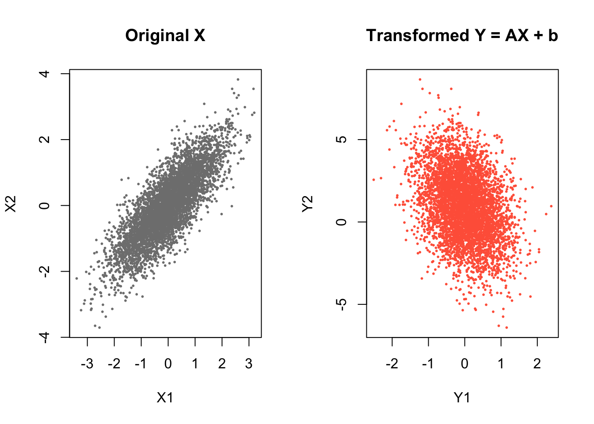
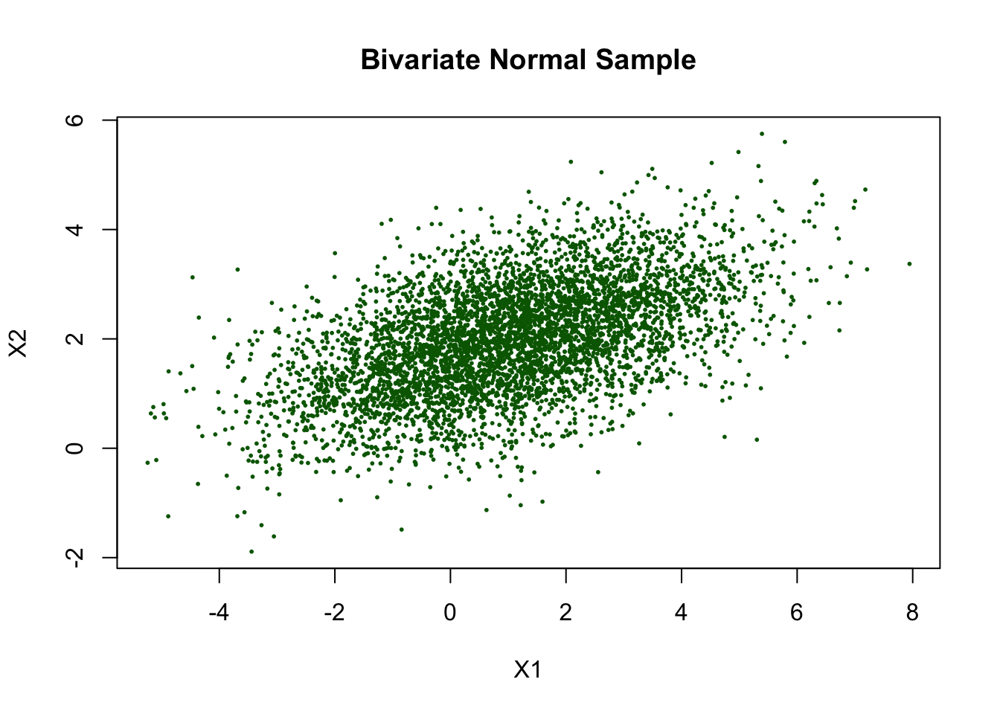
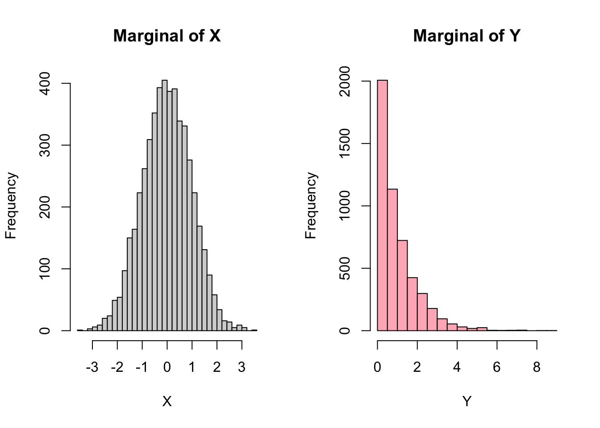
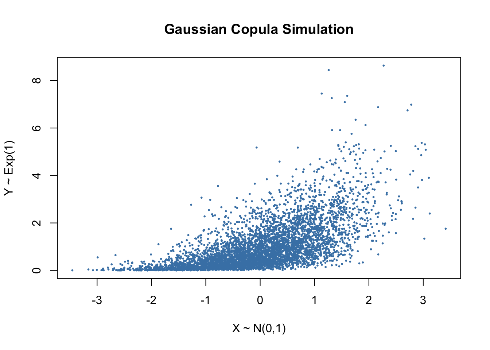
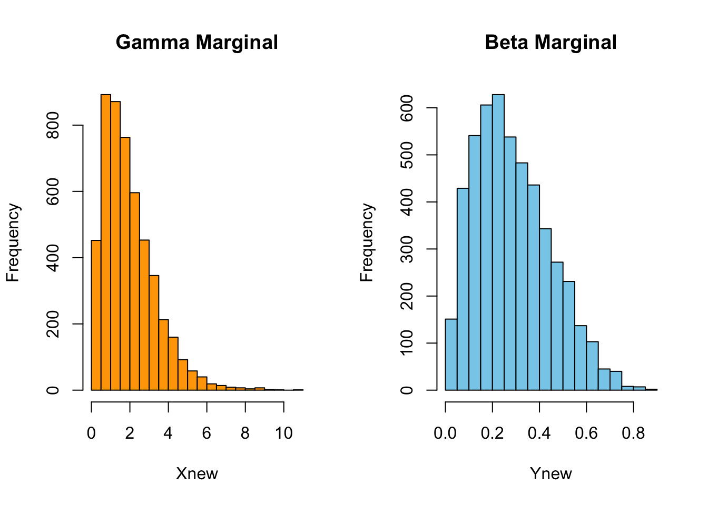
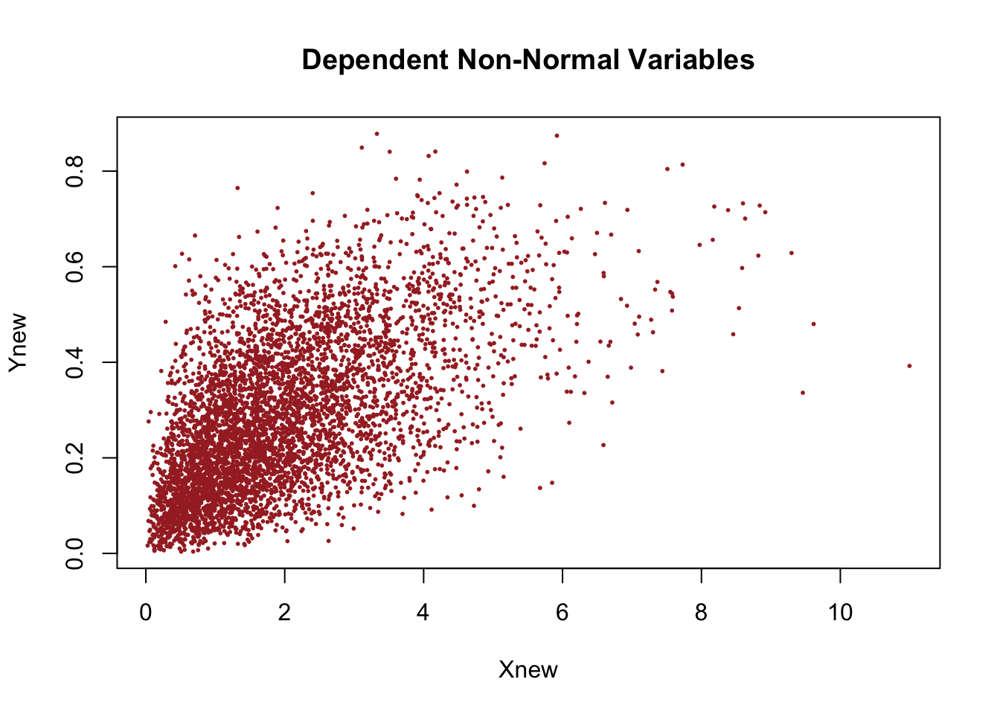
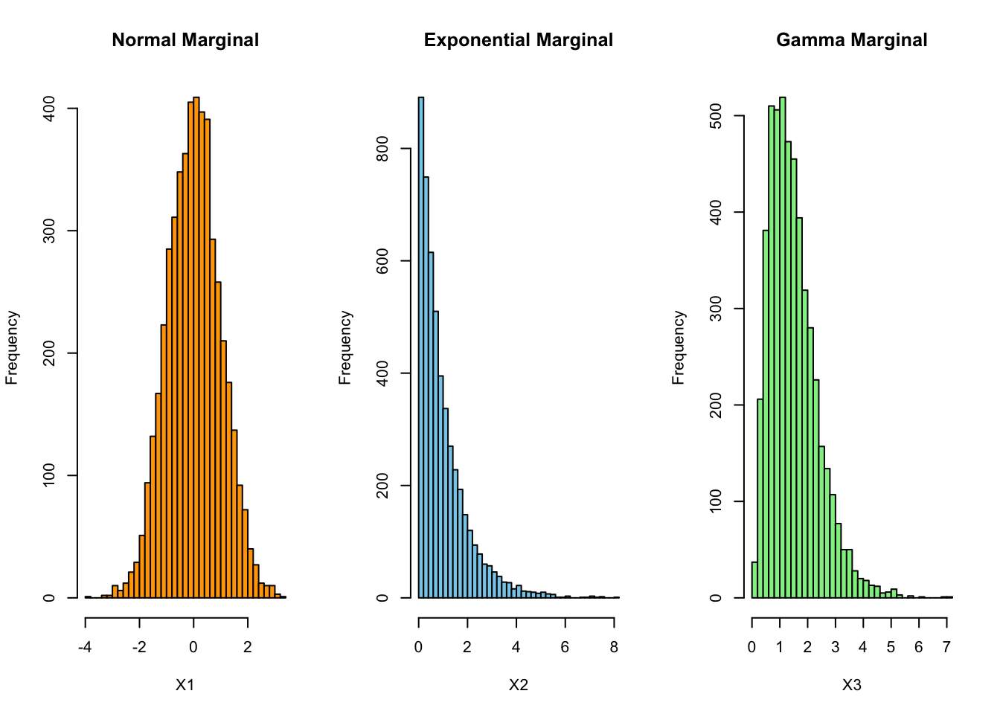
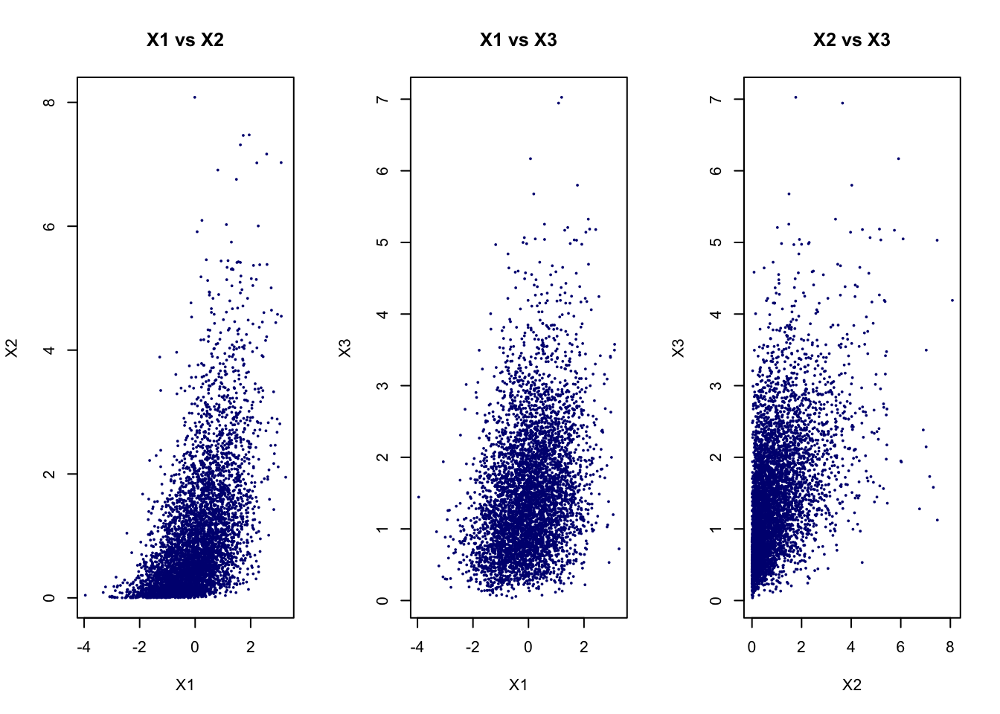

set.seed(1234)
n <- 5000
rho <- 0.8
Sigma <- matrix(c(1, rho,
rho, 1), 2, 2)
L <- chol(Sigma)
Z <- matrix(rnorm(2 * n), n, 2)
X <- Z %*% L26 R Workshop Solutions
Exercise 2: Linear Transformations of Random Vectors
Suppose \(\mathbf{X} \sim N(\mu, \Sigma)\), and define
\[ \mathbf{Y} = A\mathbf{X} + \mathbf{b}, \]
where
\[ A = \begin{pmatrix} 1 & 0 \\ -1 & 2 \end{pmatrix}, \qquad \mathbf{b} = \begin{pmatrix} 0 \\ 1 \end{pmatrix}. \]
- Generate \(\mathbf{X}\) from Exercise 1, then apply the transformation above.
A <- matrix(c(1, 0,
-1, 2), 2, 2)
b <- c(0, 1)
Y <- t(A %*% t(X)) + matrix(b, n, 2, byrow = TRUE)- Plot the transformed \(Y_1\) against \(Y_2\). Compare it with the plot of original \(X_1\) against \(X_2\). How has the location and the shape of the cloud changed?
par(mfrow = c(1, 2))
plot(X[,1], X[,2],
pch = 16, cex = 0.4, col = "gray50",
xlab = "X1", ylab = "X2",
main = "Original X")
plot(Y[,1], Y[,2],
pch = 16, cex = 0.4, col = "tomato",
xlab = "Y1", ylab = "Y2",
main = "Transformed Y = AX + b")
Compared to the original plot of \((X_1, X_2)\), the transformed variables \((Y_1, Y_2)\) show both a change in location and a change in shape.
- Location: The cloud has shifted upward. This is due to the addition of the vector \(b = (0,1)^\top\), which increases the mean of the second component.
- Shape: The original cloud is elongated along a diagonal (due to positive correlation). After transformation, the cloud becomes rotated and reshaped. The linear transformation A mixes the variables \((Y_2 = -X_1 + 2X_2 + 1)\), which changes both the direction and strength of dependence.
Overall, the transformation applies a combination of rotation, stretching, and shifting, resulting in a differently oriented elliptical cloud.
- Compute the sample mean of \(\mathbf{Y}\). Is it close to \(A\mu + b\)?
colMeans(Y)[1] -0.01242283 1.01213626The theoretical mean can be computed as follows:
\[ A\mu + b = \begin{pmatrix} 1 & 0 \\ -1 & 2 \end{pmatrix} \begin{pmatrix} 0 \\ 0 \end{pmatrix} + \begin{pmatrix} 0 \\ 1 \end{pmatrix} = \begin{pmatrix} 0 \\ 1 \end{pmatrix}. \]
The sample mean of \(\mathbf{Y}\) is approximately \((-0.003, 1.022)\), which is close to the theoretical mean \(A\mu + b = (0,1)\). The small difference is due to sampling variability, since the result is based on a finite simulation.
Exercise 3: Simulating from a Multivariate Normal Distribution
Tip
You may also simulate multivariate normal data directly using mvrnorm() from the MASS package.
- Generate 5000 observations from \[ \mu = \begin{pmatrix} 1 \\ 2 \end{pmatrix}, \qquad \Sigma = \begin{pmatrix} 4 & 1 \\ 1 & 1 \end{pmatrix}. \]
library(MASS)
set.seed(1234)
mu <- c(1, 2)
Sigma2 <- matrix(c(4, 1,
1, 1), 2, 2)
X2 <- mvrnorm(n = 5000, mu = mu, Sigma = Sigma2)
plot(X2[,1], X2[,2],
pch = 16, cex = 0.4, col = "darkgreen",
xlab = "X1", ylab = "X2",
main = "Bivariate Normal Sample")
- Compare the sample mean with \(\mu\).
colMeans(X2)[1] 1.017113 1.988966The sample mean is approximately (1.017, 1.989), which is very close to the theoretical mean (1,2). This suggests that the simulated data are centred around the correct location.
- Compare the sample covariance matrix with \(\Sigma\).
cov(X2) [,1] [,2]
[1,] 3.897810 1.034245
[2,] 1.034245 1.005404The sample covariance matrix is close to the theoretical covariance matrix. This indicates that the simulation reproduces the intended dependence structure quite well.
Why do the sample quantities differ slightly from the theoretical values?
The sample quantities differ slightly from the theoretical values because the simulation uses a finite sample of size 5000. Random variation means the sample mean and covariance will not match the population values exactly. As the sample size increases, the sample quantities should get closer to the theoretical values by the Law of Large Numbers.
Exercise 5: Gaussian Copula (Normal-Exponential)
- simulate:
- \(X \sim N(0,1)\)
- \(Y \sim \text{Exp}(1)\)
set.seed(1234)
rho <- 0.7
Sigma3 <- matrix(c(1, rho,
rho, 1), 2, 2)
Z <- mvrnorm(n = 5000, mu = c(0, 0), Sigma = Sigma3)
U <- pnorm(Z)
Xg <- qnorm(U[,1])
Yg <- qexp(U[,2], rate = 1)- Plot histogram for \(X\) and \(Y\). Briefly explain the shape.
par(mfrow = c(1, 2))
hist(Xg, breaks = 30, col = "lightgray",
main = "Marginal of X", xlab = "X")
hist(Yg, breaks = 30, col = "lightpink",
main = "Marginal of Y", xlab = "Y")
The histogram of \(X\) is approximately symmetric and bell-shaped, which is consistent with a Normal(0,1) distribution. The histogram of \(Y\) is right-skewed, with many small values and a long right tail, which is consistent with an Exponential(1) distribution. This shows that the copula approach preserves the chosen marginal distributions.
- Plot \(X\) against \(Y\). Briefly explain the dependence structure.
plot(Xg, Yg,
pch = 16, cex = 0.4, col = "steelblue",
xlab = "X ~ N(0,1)",
ylab = "Y ~ Exp(1)",
main = "Gaussian Copula Simulation")
The scatterplot shows a positive dependence between \(X\) and \(Y\). Larger values of \(X\) tend to be associated with larger values of \(Y\). However, the cloud is not elliptical, because the marginals are different, one is normal and the other is exponential. The dependence is induced through the Gaussian copula, which links the variables through correlated latent normal variables.
- How is copula-based model different from a multivariate normal model?
In a multivariate normal model, everything is jointly normal. In a copula model, the marginals can be different, while the dependence is imposed separately through the copula.
Exercise 6: Gaussian Copula (Gamma-Beta)
- Simulate dependent variables with:
- \(X \sim \text{Gamma}(2,1)\)
- \(Y \sim \text{Beta}(2,5)\) using Gaussian copula with dependence parameter \(\rho = 0.6\).
set.seed(1234)
rho <- 0.6
Sigma4 <- matrix(c(1, rho,
rho, 1), 2, 2)
Z <- mvrnorm(n = 5000, mu = c(0, 0), Sigma = Sigma4)
U <- pnorm(Z)
Xnew <- qgamma(U[,1], shape = 2, rate = 1)
Ynew <- qbeta(U[,2], shape1 = 2, shape2 = 5)- Plot histogram for \(X\) and \(Y\). Briefly explain the shape.
par(mfrow = c(1, 2))
hist(Xnew, breaks = 30, col = "orange",
main = "Gamma Marginal", xlab = "Xnew")
hist(Ynew, breaks = 30, col = "skyblue",
main = "Beta Marginal", xlab = "Ynew")
The histogram of \(X\) is right-skewed, with most values concentrated near smaller positive values and a long tail to the right. This is consistent with a Gamma(2,1) distribution.
The histogram of \(Y\) is bounded between 0 and 1 and is also right-skewed, with most values concentrated near the lower end of the interval. This matches the shape of a Beta(2,5) distribution.
These histograms show that the copula method preserves the chosen marginal distributions.
- Plot \(X\) against \(Y\). Briefly explain the dependence structure.
plot(Xnew, Ynew,
pch = 16, cex = 0.4, col = "brown",
xlab = "Xnew",
ylab = "Ynew",
main = "Dependent Non-Normal Variables")
The scatterplot shows clear positive dependence, since larger values of \(X\) tend to be associated with larger values of \(Y\). The cloud is not elliptical because the variables are not jointly normal. The dependence comes from the Gaussian copula.
Exercise 7: Gaussian Copula (Normal-Exponential-Gamma)
- Simulate three dependent variables:
- \(X_1 \sim N(0,1)\)
- \(X_2 \sim \text{Exp}(1)\)
- \(X_3 \sim \text{Gamma}(3,2)\)
- using a Gaussian copula with correlation matrix \[ \Sigma = \begin{pmatrix} 1 & 0.6 & 0.3 \\ 0.6 & 1 & 0.5 \\ 0.3 & 0.5 & 1 \end{pmatrix}. \]
set.seed(1234)
Sigma5 <- matrix(c(1, 0.6, 0.3,
0.6, 1, 0.5,
0.3, 0.5, 1), 3, 3)
Z5 <- mvrnorm(n = 5000, mu = c(0, 0, 0), Sigma = Sigma5)
U5 <- pnorm(Z5)
X1 <- qnorm(U5[,1])
X2 <- qexp(U5[,2], rate = 1)
X3 <- qgamma(U5[,3], shape = 3, rate = 2)- Plot marginal histograms and pairwise scatterplots.
par(mfrow = c(1, 3))
hist(X1, breaks = 30, col = "orange",
main = "Normal Marginal", xlab = "X1")
hist(X2, breaks = 30, col = "skyblue",
main = "Exponential Marginal", xlab = "X2")
hist(X3, breaks = 30, col = "lightgreen",
main = "Gamma Marginal", xlab = "X3")
The histograms should show the intended marginal shapes with
- \(X_1\) is approximately symmetric and bell-shaped, consistent with N(0,1),
- \(X_2\) is right-skewed, consistent with (1),
- \(X_3\) is positive and right-skewed, consistent with (3,2)
par(mfrow = c(1, 3))
plot(X1, X2,
pch = 16, cex = 0.4, col = "navy",
xlab = "X1",
ylab = "X2",
main = "X1 vs X2")
plot(X1, X3,
pch = 16, cex = 0.4, col = "navy",
xlab = "X1",
ylab = "X3",
main = "X1 vs X3")
plot(X2, X3,
pch = 16, cex = 0.4, col = "navy",
xlab = "X2",
ylab = "X3",
main = "X2 vs X3")
The pairwise scatterplots should show positive dependence in each pair, although the clouds will not generally be elliptical because the marginals are not all normal.
- Check the sample correlation matrix.
cor(Z5) [,1] [,2] [,3]
[1,] 1.0000000 0.5887757 0.3105631
[2,] 0.5887757 1.0000000 0.5125894
[3,] 0.3105631 0.5125894 1.0000000The latent Gaussian correlation matrix should be close to the target matrix.